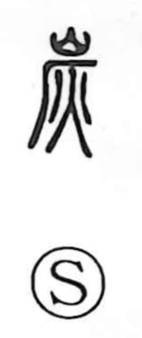

炭

Uncategorized
Kun: sumi | On: tan
charcoal
Explanation
This character is a compound graph combining 山 (mountain), 厂 (the profile of a cliff), and 火 (fire). The cliff-shaped 厂 suggests a rock face, and together the elements picture fire set beneath a mountainside—an image of making charcoal in a kiln or pit against a cliff. From this scene comes the meaning “charcoal.” Classical texts already tie the practice to season and use: the Huainanzi notes that at the end of autumn, when grasses and trees yellow and fall, people cut brushwood and make charcoal; and the Baopuzi praises the preservative power of carbonization, saying that once wood is burned into charcoal it endures for ages without decay.